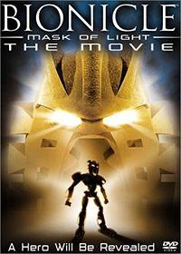
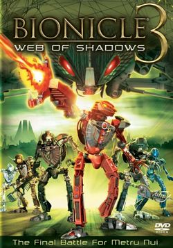

BIONICLE has four straight-to-DVD films that have come out during its original run:
BIONICLE: Mask of Light (2003)

BIONICLE 2: Legend of Metru Nui (2004)
BIONICLE 3: Web of Shadows (2005)

BIONICLE: The Legend Reborn (2009)
The correct order to watch the BIONICLE film franchise
1. Watch Legend of Metru Nui until the 1:06:08 mark. Okay, stop.
2. Now watch Web of Shadows but stop before the final scene.
3. Finish Legend of Metru Nui.
4. Watch Mask of Light entirely.
5. Finish the rest of Web of Shadows
6. Skip The Legend Reborn. We don't talk about that. That didn't happen.
Other animations
In addition to movies great visual storytelling and worldbuilding has been done by online flash animations and promo animations. The most notable ones are probably the Bohrok Online Animations as well as Bohrok-Kal Online Animations.
Most of the animations, from commercials to promo CDs, are archived in the BioMedia Project website.